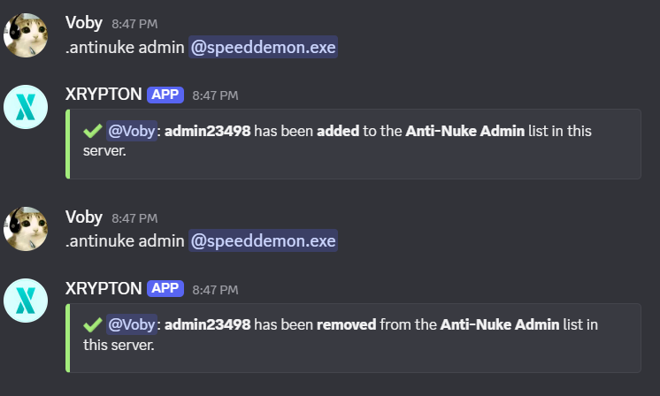
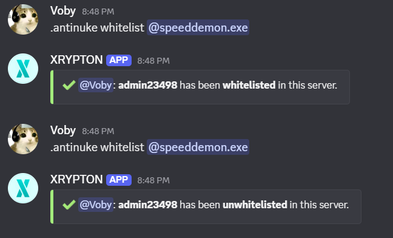
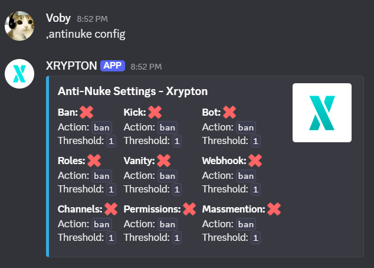
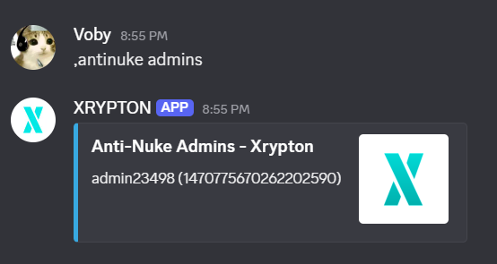

Anti-Nuke
The Anti-Nuke system monitors your server for destructive actions and automatically reverts them when suspicious activity is detected. You can configure thresholds, whitelist trusted members, and assign admins to manage the module.
Allowing users to configure the antinuke
Designate trusted members as Anti-Nuke admins. Only admins can change the antinuke configuration, manage whitelists, and view logs.
,antinuke admin <user> — grants a user antinuke admin permissions.
Arguments: user — Discord User
Arguments: user — Discord User

Exempting users from the antinuke
Whitelist members so their actions are never flagged by the Anti-Nuke system. This is useful for server owners and trusted staff with high-level permissions.
,antinuke whitelist <user> — whitelist a user.
,antinuke whitelist remove <user> — remove a user from the whitelist.
Arguments: user — Discord User
,antinuke whitelist remove <user> — remove a user from the whitelist.
Arguments: user — Discord User

Viewing the antinuke configuration
Check the current Anti-Nuke settings, including action thresholds, punishment mode, and which channels are protected.
,antinuke config — displays the current Anti-Nuke configuration.
Arguments: none
Arguments: none

Viewing users with antinuke admin
See all members who have been granted Anti-Nuke admin access.
,antinuke admins — lists all Anti-Nuke admins.
Arguments: none
Arguments: none
